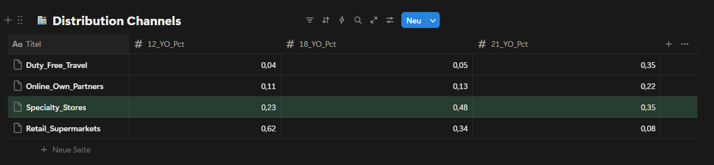
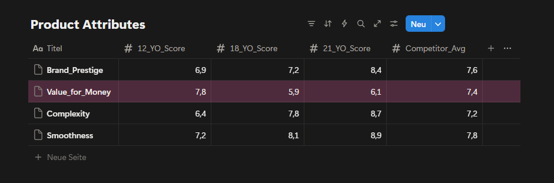
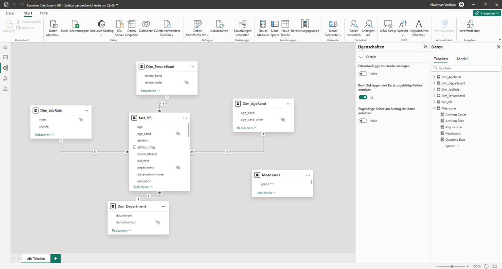
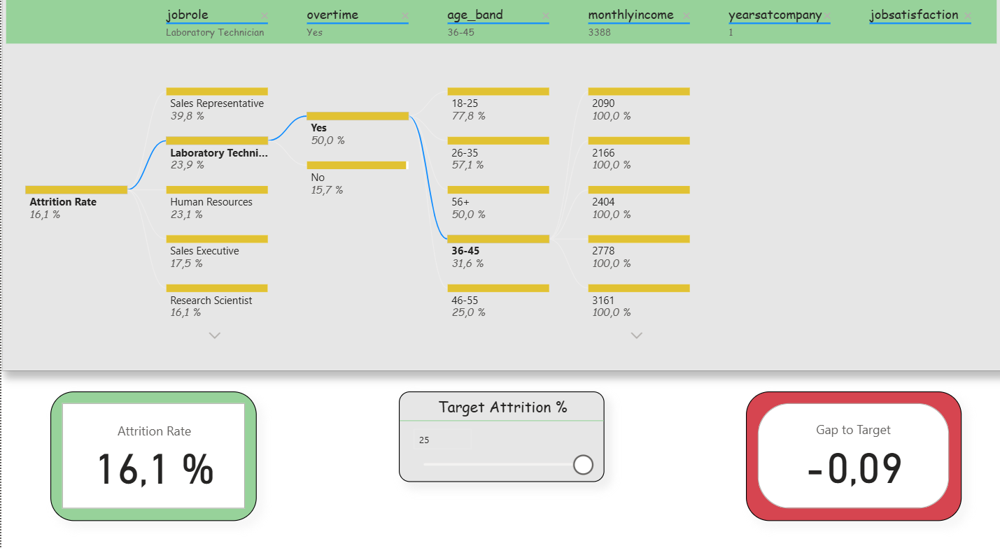
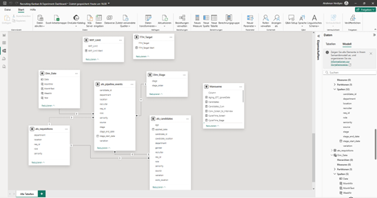
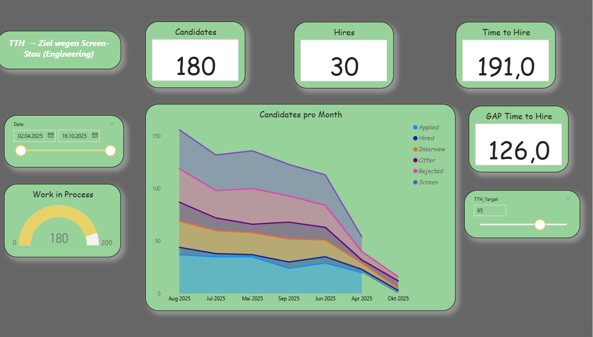
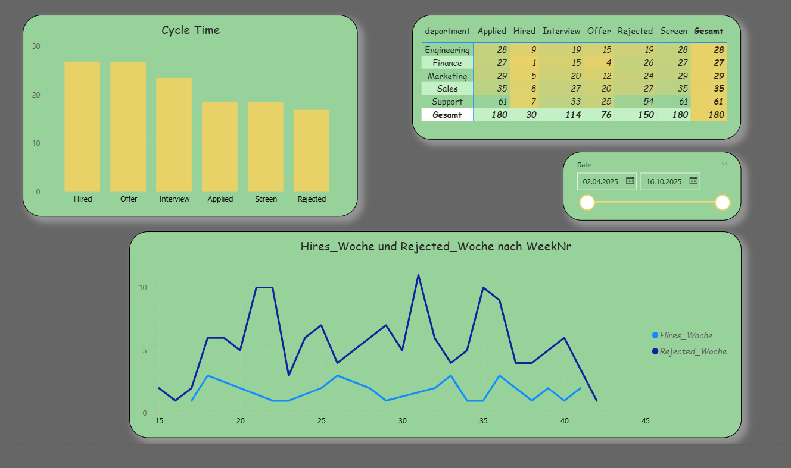
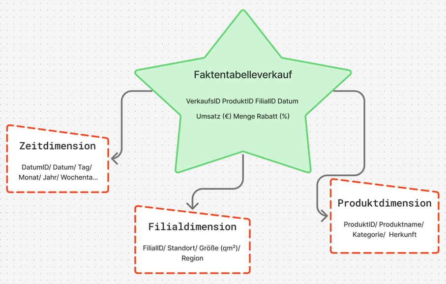
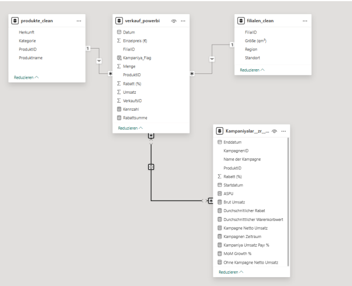

When I first looked at the brand's overall performance over the past two years, what caught my attention was the complaints around the 18YO product and a 19% revenue decline despite significant marketing spend. My initial instinct was that 12YO was pulling demand away from 18YO, creating a false read on where the real problem was. Part of why I thought that: I had already looked at competitor data and most of them were leaning premium. That made me think the market itself was moving in that direction. But the further I got into the customer data, the clearer it became the problem wasn't 12YO. The problem was 18YO itself and how it was being positioned. Customers weren't turning it down because it was expensive. They just couldn't see why it was worth more than the 12YO sitting right next to it on the shelf. That realization shifted the entire direction of my analysis. And the competitive data was actually pointing the same way: there was a real, unfilled gap in the everyday-use segment exactly where 12YO sat. So instead of recommending a repositioning push for 18YO, I made the case for simplifying the portfolio. I reallocated €1.52M in marketing budget and projected a €125K revenue uplift in Year 1 without increasing total spend.
Business Context
This is a case study I built for my portfolio, based on a hypothetical premium whisky brand. The dataset was constructed using AI, designed to reflect realistic market dynamics drawn from publicly available industry benchmarks. The brand operates in the premium single malt whisky market a space where competing on price alone doesn't get you far. Heritage, storytelling, and how clearly a product earns its place on the shelf matter just as much as the price tag. And there will always be customers willing to pay in this category. That's exactly why sales here depend so heavily on perception, not just on the product itself. The portfolio runs across three age expressions: 12YO (€65), 18YO (€145) and 21YO (€320) each theoretically targeting a different type of buyer. Looking at the competitive landscape, the picture is clear: Glenfiddich owns mass-premium, Macallan anchors ultra-luxury, Glenlivet holds accessible premium. Each of them knows exactly what it is. And that clarity is precisely what makes the problem sitting between 12YO and 18YO so visible and so urgent.
What the competitive map makes clear is that the gap between mass- premium and ultra-luxury isn't just about price it's about perception. Brands that hold that space successfully don't compete on cost. They compete on narrative. Trying to write a new narrative for 18YO would have been, frankly, a bit of a wishful move. But 12YO keeps the door open. Particularly through sustained B2B partnerships bars, cocktail venues, on-trade channels 12YO has a real shot at becoming the lead player in this portfolio.
Date set for Competitive Landscape
This analysis highlights a clear gap between mass-premium and ultra- luxury positioning, where differentiation relies less on price and more on perceived expertise, storytelling, and channel strategy.
The Problem Statement
Despite significant marketing investment (€1.52M in 2024), the portfolio began to show structural weaknesses that negatively impacted both revenue and brand perception:
2YO dominance created internal cannibalization:
With 660 units sold annually and the highest value- for-money perception, 12YO increasingly attracted customers who would otherwise consider 18YO, weakening the mid-tier product’s role.
18YO suffered from unclear positioning:
Positioned between volume-driven 12YO and prestige- driven 21YO, 18YO lacked a distinct identity, resulting in a 19% year-over-year revenue decline and growing customer perception that it was “not worth the premium over 12YO.”
21YO faced pressure to justify its premium price:
While maintaining strong brand prestige, declining volumes (-11% YoY) indicated rising expectations from status-driven buyers and increased sensitivity to perceived value versus ultra-luxury competitors.
Fig. 1: Competitive landscape by price point and brand positioning mapping key players across the premium single malt whisky market (2024).
The competitive landscape highlights that brand naturally attracts connoisseurs and flavor-driven customers through its craft and story-driven positioning. This creates an opportunity to target customers seeking depth and authenticity rather than mass accessibility. At the same time, competitors such as Glenfiddich benefit from aggressive marketing and broad distribution, allowing them to stabilize or even grow sales despite market pressure. Competing directly on mass retail or aggressive marketing would move our brand away from its core audience. For status-oriented buyers, clear ultra-premium signaling is required, as they tend to anchor their perception around strong, easily recognizable luxury cues.
Fig. 2: Customer segmentation by purchase motivation and average annual spend four distinct groups identified across the premium whisky buyer base.
Customer segmentation reveals four clearly defined groups with distinct motivations and spending behavior. Connoisseurs show strong interest in 18YO, while Status Seekers gravitate toward 21YO and demonstrate the highest average annual spend. Powever, the data also indicates overlap between segments, particularly around premium expectations. While Connoisseurs value flavor exploration, their hesitation to commit to 18YO makes it difficult to fully convert interest into consistent purchases. Additionally, overall spending data suggests that Status Seekers spend more per location, which reduces the effectiveness of broad, location-based programs and increases the importance of precise product positioning.
Fig. 3: Portfolio financial performance revenue and unit sales comparison across 12YO, 18YO, and 21YO expressions (2023–2024).
Financial and sales performance data confirms that 18YO has experienced the sharpest decline across the portfolio. Despite relatively healthy margins, both revenue and unit sales have dropped significantly, indicating weakening willingness to pay rather than cost inefficiency. In contrast, 12YO remains highly resilient due to its strong value-for- money perception, while 21YO’s decline reflects rising expectations within a very specific and demanding customer group. This pattern supports the conclusion that 18YO’s challenges are primarily psychological and positional, rather than operational or market driven.

Fig. 4: Sales volume by distribution channel breakdown across specialty stores, mass retail, duty-free and online for each age expression.
The distribution data shows that specialty stores play a disproportionately important role for 18YO and 21YO compared to mass retail channels. While retail supermarkets dominate 12YO sales, their impact on higher-age expressions is significantly lower. Given this structure, allocating additional resources to mass retail channels would not materially support premium objectives. Specialty stores are already aligned with the intended target audience and should remain the primary focus for premium portfolio execution. Other channels, such as duty-free and online partners, remain secondary and are currently too distant from the desired outcome to justify increased investment.
Fig. 5: Customer pain point analysis frequency and severity of key complaints by customer segment.
Customer pain points clearly indicate that the most critical issue centers around 18YO’s perceived value. The complaint “18YO not worth premium over 12YO” appears with high frequency and critical severity, particularly among Connoisseurs. This confirms that the challenge is not lack of interest, but a mismatch between price, expectations and communicated value. Additional concerns around brand perception and flavor variety further reinforce the need for clearer differentiation rather than increased promotional activity. These insights suggest that without addressing value perception, further investment in 18YO marketing would deliver diminishing returns.
Fig. 6: Marketing spend efficiency by channel ROI comparison and alignment with target customer segments (2024 actual).
Marketing spend analysis shows that a significant portion of investment is allocated to channels that primarily support 12YO volume rather than premium value creation. By discontinuing 18YO-focused campaigns, a substantial budget becomes available for reallocation. Redirecting part of this budget toward strengthening brand perception and premium signaling creates an opportunity to reinforce both 12YO and 21YO without increasing total spend. In particular, reallocating funds from generic digital advertising toward more targeted channels improves alignment with premium objectives. Overall, this creates approximately €1.52M in available marketing capacity that can be used more strategically.
Proposed Marketing Reallocation
With 18YO marketing discontinued, approximately €1.52M becomes available for reallocation. Rather than increasing total spend, this budget will be redistributed to better support our simplified two-product portfolio.
Current Allocation (2024):
Digital Ads: €665K (43.7%)
Broad reach campaigns targeting volume.
Primarily attracts Social Drinkers (lower margin segment.
ROI: ~2.5:1.
Retail Support: €1040K (27.5%)
Generic POS materials and promotions.
Not tailored to premium positioning.
ROI: ~2.2:1.
Trade Shows: €293K (19.3%)
Industry events and whisky festivals.
Good access to Connoisseurs and Status Seekers.
ROI: ~3.8:1.
Influencer: €144K (9.5%)
Limited partnerships, underutilized channel.
Strong fit for brand storytelling.
ROI: ~3.2:1.
Proposed Allocation (2025):
Digital Ads: €400K (-40%)
Shift from volume to premium targeting.
Focus on Connoisseurs and Status Seekers.
Better creative emphasizing craft and heritage.
Retail Support: €500K (-52%)
Focus only on specialty stores, not mass retail.
Premium display materials for 12YO and 21YO.
Co-funded partnership program.
Trade Shows: €500K (+71%)
Increase presence at high-end whisky events.
VIP experiences for 21YO buyers.
Direct access to status-driven customers.
Influencer: €420K (+192%)
Expand to 15–20 premium lifestyle and whisky content creators.
Long-form storytelling about craft and quality.
Builds brand aura supporting both 12YO and 21YO.
TOTAL: €1,520K (neutral budget)
This reallocation moves spending away from channels that support volume and toward channels that support premium perception and brand strength. Trade Shows and Influencer channels show the highest ROI and best alignment with our target segments, which is why they receive the largest increases. The shift happens gradually over six months to allow time for new partnerships to develop and campaign creative to be produced.

Fig. 7: Product attribute scores by age expression perceived value, complexity, smoothness and brand aura rated against competitor average.
Product attribute scores reveal a clear imbalance in perceived value. While 18YO performs well on complexity and smoothness, its value-for-money score is significantly lower than both 12YO and the competitor average. This gap explains recurring customer dissatisfaction and reinforces price resistance. Without visual, experiential, or narrative upgrades, 18YO will continue to trigger friction at the point of purchase. Conversely, improving brand aura and visual perception around 12YO offers an opportunity to elevate perceived value without changing price.
Across all datasets, the evidence consistently points to a portfolio design issue rather than a demand shortage. The core challenge lies in how value is communicated and perceived across age expressions, with 18YO positioned in a way that creates friction instead of progression.
Strategic Options:
Option 1: Aggressive Premium Repositioning of 18YO
Strategy:
Reposition 18YO as a clearly premium product by increasing its price and limiting availability, aiming to close the perceived gap with 21YO.
Key Actions:
Increase 18YO retail price to reinforce premium perception.
Restrict distribution primarily to specialty stores.
Shift messaging toward exclusivity and craftsmanship.
Reduce mass-market visibility to avoid comparison with 12YO.
Expected Outcome:
This approach could improve perceived value and margins if accepted by Connoisseurs, but carries a high risk of volume loss due to existins price sensitivity and weak value-for-money perception.
Risks:
Strong resistance from customers already questioning 18YO value.
High probability of accelerated sales decline.
Increased internal competition with 21YO.
Option 2: Portfolio Clarification by Phasing Out 18YO (Preferred)
Strategy:
Remove 18YO from the active portfolio and simplify the value ladder by focusing on a clear two-step progression: 12YO for quality-driven volume and 21YO for status-driven premium demand.
Enhance visual identity and perceived value of 12YO.
Reinforce ultra-premium signaling for 21YO through selective channels.
Expected Outcome:
By eliminating internal cannibalization and psychological friction, the portfolio becomes easier to understand. This strengthens trade-up logic toward 21YO while preserving 12YO’s strong volume base.
Why This Option:
Directly addresses the most critical customer pain point.
Frees approximately €1.52M in marketing capacity without increasing spend.
Aligns with observed customer behavior and spending patterns.
Reduces complexity and execution risk.
Option 3: Volume-First Strategy Focused on 12YO (Not Recommended)
Strategy:
Double down on 12YO as the primary growth driver by prioritizing volume and mass appeal while deprioritizing premium positioning.
Key Actions:
Allocate the majority of marketing spend to 12YO.
Expand mass retail and promotional activities.
Minimize focus on premium differentiation.
Expected Outcome:
Short-term sales stability driven by volume growth, but at the cost of long-term brand equity and premium perception.
Risks:
Brand dilution and loss of premium identity.
Reduced attractiveness for high-value customers.
Increased price sensitivity across the portfolio.
Given the structural nature of the problem and the risks associated with forcing premium repositioning, simplifying the portfolio emerged as the most sustainable and least risky strategic direction.
Risk Analysis
While Option 2 offers the clearest path forward, it carries meaningful risks that require active management. Removing 18YO eliminates €15,950 in annual revenue. Not all of this revenue will automatically transfer to other products.
Downside Scenario:
If customer behavior does not follow expectations, the following outcomes are possible:
50% of current 18YO buyers move down to 12YO (55 customers)
Revenue gain: 55 × €65 = €3,575
20% trade up to 21YO (22 customers)
Revenue gain: 22 × €320 = €7,040
30% leave for competitors such as Glenfiddich or Macallan (33 customers)
Revenue lost: 33 × €145 = €4,785
Net Impact:-€5,335 (-8% of total portfolio revenue)
This scenario becomes more likely if customers are not actively guided through the transition. To reduce this risk, a 90-day customer retention program will start in Month 1, including direct outreach to former 18YO buyers and targeted incentives to encourage trial of 21YO. Removing 18YO creates a gap in the €145–200 price range, which competitors may see as an opportunity.
Likely Scenarios:
Scenario 1:
Glenfiddich reduces the price of their 18YO from €175 to €135. Position 12YO as better value ("Why pay €135 for 18 years when you can get quality at €65?") and accelerate brand elevation work to strengthen 12YO perception.
Scenario 2:
Macallan launches a new mid-tier product priced around €160. Double down on 21YO exclusivity and heritage positioning, where Macallan cannot fully match our craft story. Competitor pricing and product launches will be monitored monthly during the first six months, with flexibility to adjust strategy if market conditions change significantly.
Retailer Relationship Risk
Specialty retailers currently generate revenue from three Balvenie products. Reducing the portfolio to two SKUs may reduce shelf presence and total sales for these partners.
Retailer Concern:
"If Balvenie reduces my revenue, why should I give you premium shelf space?"
To address this, a three-part specialty store partnership program will launch in Month 1:
Margin improvement — Increase 21YO retailer margin from 25% to 30%.
Cost: €512 per year, securing long-term relationships.
Co-funded displays — €2,000 per store for premium in-store setups.
Total investment: €40K across 20 key locations.
Staff training & events — Product education sessions and customer tasting events.
Total investment: €65K.
This approach keeps retailers engaged and motivated to promote the remaining portfolio despite a reduced SKU count.
Customer Confusion Risk:
Some customers who actively searched for 18YO may feel confused or frustrated when it is no longer available.
To manage the transition smoothly, the following steps will be taken:
Month 1 — Inform specialty retailers first and provide clear talking points for staff.
Month 2 — Email past 18YO buyers with a personal explanation and a one-time 15% discount on 21YO.
Month 3–6 — Monitor customer service inquiries and retailer feedback on a weekly basis.
If confusion or negative sentiment exceeds 20% of feedback, additional communication materials will be created or a limited farewell edition will be considered to ease the transition. These risks are real but manageable. Success depends on staying close to the data during the first six months and responding quickly if customer behavior deviates from projections.
Recomendation
Based on the analysis, I recommend phasing out 18YO from active portfolio focus and simplifying the value ladder around two clearly differentiated products: 12YO as the quality-driven volume anchor and 21YO as the status-driven premium expression. This approach directly addresses the root causes identified in customer pains, financial performance, and marketing efficiency, while minimizing execution risk and preserving long-term brand equity.
This recommendation was selected because it:
Eliminates internal cannibalization between 12YO and 18YO.
Removes the most critical customer pain point around value perception.
Frees marketing capacity without increasing total spend.
Strengthens portfolio clarity and trade-up logic.
Aligns with observed customer behavior rather than forcing repositioning.
Implementation will follow a phased and controlled approach:
Phase 1: Portfolio Reset (Months 1–2)
18YO-related marketing activities are discontinued. Existing inventory is managed through natural sell-through without promotional pressure.
Phase 2: Brand Reinforcement (Months 3–6)
Freed marketing budget is redirected toward strengthening brand aura and visual perception, with a focus on modernizing 12YO communication and reinforcing premium cues around 21YO.
Phase 3: Premium Focus Optimization (Months 6–12)
Selective channels such as specialty stores, trade shows, and targeted digital placements are used to support 21YO visibility and reinforce status-driven demand.
Success will be evaluated using the following metrics:
Stabilization of total portfolio revenue year-over-year.
Reduction in customer complaints related to value perception.
Improved marketing efficiency measured by ROI per channel.
Increased share of premium sales driven by 21YO.
Clearer product understanding reported by specialty retailers.
Success Metrics
Performance will be tracked across three levels: primary business outcomes, leading indicators and risk monitoring.
Primary Metrics (Business Impact):
Total portfolio revenue: Maintain ≥ €69M per year.
This case demonstrates how portfolio performance issues can stem not from market demand, but from internal complexity and unclear value communication. By prioritizing clarity over expansion, the strategy focuses on sustainable growth rather than short-term optimization.
Method and Implementation Turnover Dashboard (Power BI)
The practical implementation of the first dashboard (Overview) aimed to make employee turnover visible while simultaneously integrating agile elements. The intention was to demonstrate how a functional HR dashboard can be developed with manageable effort. The process consisted of three parts: data preparation (ETL) in Python, the construction of a clear data model in Power BI, and the visualization of the most important key figures. In addition, I incorporated agile functions: a What-If parameter (“Target Attrition %”), the metric Gap-toTarget, a simple Risk Score, and a status card with warning indicators. As a result, the dashboard was iteratively extended and corresponds to the first sprint.
Data Preparation in Kaggle
As a data source, I used an open HR dataset from Kaggle. This contained employee information such as age, income, department, or attrition status. In a Kaggle notebook, I performed basic data cleansing steps using Python (Pandas and NumPy).
Standardizing column names for easier further processing
Converting relevant variables into categories
Creating age, tenure, and income bands
As well as creating flags, for example for attrition (0/1) and overtime (0/1)
The result was a cleaned file hr_clean.csv, which served as the basis for Power BI. It is important to note that Kaggle was used exclusively for data cleansing, the visualization was carried out later in Power BI.
ETL Process (Practical Procedure)
For my work, I prepared the HR data using a simple ETL process in Power BI. First, I imported the raw data from an Excel or CSV file into Power BI. Then I renamed the column names so that they were clear and consistent, for example “EmpID,” “Attrition,” or “OvertimeHours.” After that, I adjusted the data types, meaning whether they were numbers, text, or date values. In the next step, I cleaned the data. This means that I removed or corrected missing or incorrect values. Afterwards, I created new variables, for example a flag “Attrition = 1,” to clearly see which employees had left the company. In addition, I grouped certain attributes, for example salary classes or age groups. This makes the data easier to compare.
The data model was also very important. For this purpose, I built a star schema that shows the connection between fact and dimension tables. Finally, I loaded the data into the model and was then able to create the visualizations and analyses in the dashboards.
Data Model in Power BI
After importing the cleaned CSV file into Power BI, I built a star schema. The central fact table (Fact_HR) contains all employee data. In addition, I created dimension tables, for example Dim_Department, Dim_JobRole, Dim_AgeBand, Dim_TenureBand, and Dim_IncomeBand.
The relationships were created as (1: n). For the age and tenure bands, I inserted helper columns for sorting, whereby the order had to be adjusted manually in some visualizations. This approach makes the model clear and at the same time flexible. There is also a small table _Measures. It is deliberately created without relationships and serves only as a container for all DAX measures. The placeholder column is hidden; only the measures are visible in the report. This keeps the model clear and still flexible.

Star schema of the HR data model.
Key Figures (DAX)
For the analysis, I calculated central key figures using DAX. These include:
Headcount = Total number of employees
Attrition Count = Number of employees who have left
Attrition Rate = Ratio of employees who have left to total employees
Overtime Rate = Proportion of employees with overtime
Avg Income = Average monthly income.
These key figures enable both an overall overview and detailed analyses by departments, roles, or employee groups.
Report Pages in Power BI
Das Dashboard besteht aus drei Seiten.
Overview: In addition to the central key figures (Headcount, Attrition Rate, Overtime Rate, Avg Income), agile extensions were integrated. These include a What-If parameter for the attrition target, the key figure Gap-to-Target, a simple Risk Score, and a status card. In this way, turnover is not only described but also compared with target values and linked to risk indicators.
Report page 1: Overview / Source: Own representation in Power BI (cf. GitHub 2025).
Deep-Dive (Decomposition Tree): Here, the attrition rate could be broken down step by step according to various influencing factors (e.g., department, overtime, income, tenure). Slicers were deliberately reduced in order to keep the analysis freely exploratory. In addition, two small KPIs (Attrition Rate and Gap-to- Target) remained visible to that the target values were not lost. This clearly reflects the agile idea of interactive exploration.

Report page 2: Deep dive (breakdown tree). / Source: Own representation in Power BI (cf. GitHub 2025).
Decision Support (Extended Drillthrough): The third page was expanded into an agile decision dashboard. In addition to detailed analyses per department, it contains three scenario buttons (Status Quo, Overtime-Cap, Onboarding-Boost) that simulate different situations. A recommendation card automatically provides suggestions (e.g., limit overtime, strengthen onboarding). A table shows the top 5 risk roles based on the new measure “Risk Score.” Demographic visualizations (age, tenure) immediately adapt to the selected scenario. This makes this page the clearest example of Agile BI.
Report page 3: Drillthrough – Department Detail. / Source: Own representation in Power BI (cf. GitHub 2025)
Descriptive Results
The dashboard shows typical patterns of employee turnover that are also described in the literature. Younger employees (e.g., in the age band 18–25 years) and individuals with short organizational tenure (≤ 1 year) have a significantly higher exit rate. The risk likewise increases when overtime is regularly performed. Job roles in the Sales area are particularly affected.
What was new here was that the results were not only visible descriptively but were also connected with agile elements. With the What-If parameter, a target value for turnover could be set, and the Gap-to-Target metric immediately showed the deviation between actual and target. The simple Risk Score combined factors such as overtime, tenure, and income, thereby making risk segments clearly recognizable. In this way, a purely descriptive analysis became an agile instrument that not only identifies patterns but also opens up scope for decision-making .
Recruiting-Kanban & Experiment Dashboard (ATS Pipeline, Power BI)
The dashboard represents the recruiting process in Kanban logic. Important key figures such as Work-in-Process (WIP), Cycle Time, Throughput, Conversion, and Time-to-Hire change daily or weekly. Therefore, this case is well suited to make agile control visible. The report layout follows the ideas of IBCS/SUCCESS: a clear statement in the title, uniform colors, and a reduced design so that HR, IT, and hiring managers use a common data language
Data Basis and ETL
The solution uses three synthetic CSV files. ats_pipeline_events contains the event log per candidate and stage (Applied, Screen, Interview, Offer, Hired/Rejected) with stage_start_date and stage_end_date as well as contextual fields such as Department, Role, Seniority, Location, Source, Recruiter, and Variation (A/B). ats_candidates provides master data on the candidate (e.g., applied_date, recruiter, variation). ats_requisitions describes the vacancy (req_id, department, role, location, seniority). In Power BI, the files are imported, data types are set (especially the date fields), empty strings are treated as null, and identifiers are standardized. This event log is the appropriate foundation for Kanban because start and end timestamps per stage later directly enable calculations for CFD, Cycle Time, Aging, and Throughput.
Data Model (Star Schema)
The model follows a star schema. The fact table ats_pipeline_events lies at the center. The dimensions ats_candidates, ats_requisitions, Dim_Date, and Dim_Stage provide the axes of analysis. Between Dim_Date[Date] and events[stage_start_date] there is an active 1:n relationship for “Flow-in.” Additionally, an inactive relationship from Dim_Date[Date] to events[stage_end_date] is stored. This inactive connection is deliberately activated in measures using USERELATIONSHIP() in order to correctly control “Flow-out” (e.g., hires per week). Attributes that appear twice in the fact table (e.g., department) are hidden in the report; for analyses, the columns from the dimensions are used. The model is lean and can easily be extended in sprints.

Star diagram of the recruiting Kanban in Power BI (own representation, cf. GitHub 2025).
Dimensions and Sorting
Dim_Date is generated from the minimum of the start date and the maximum of the end date and is extended by Year, MonthNr, MonthText, and WeekNr. MonthText is sorted by MonthNr, and the table is marked as a date table. Dim_Stage defines the order of stages via stage_order (Applied … Rejected), so that diagrams sort consistently. These two tables ensure a clean time and process logic throughout the entire report.
Key Figures and Analytical Logic (DAX)
The key figures combine descriptive transparency with simple prescriptive signals. Three central measures are presented as examples.Time-to-Hire (average in days) and Gap-to-Target. First, the average duration between “Applied” and “Hired” is calculated. Afterwards, it is compared with a target value set via a What-If parameter.
The target value is created as a What-If parameter TTH_Target; the gap results as Gap_TTH = [TTH] − [TTH_Target Value]. A positive gap indicates an SLA deviation and provides a clear impulse for action.
WIP Limit and Over-Limit. Kanban actively controls the number of parallel cases. WIP counts candidates in the active stages. With a second What-If parameter WIP_Limit, the limit is set; Over-Limit immediately signals bottlenecks.
WIP :=
CALCULATE(
DISTINCTCOUNT(ats_pipeline_events[candidate_id]),
ats_pipeline_events[stage] IN {"Applied","Screen","Interview","Offer"})
WIP_Over_Limit :=
VAR Over = [WIP] - [WIP_Limit Wert]
RETURN IF(Over > 0, Over, 0)
If Over-Limit > 0, overload is present. In practice, this leads to a measure, for example lowering the limit or increasing capacity.
Throughput per Week (Flow-out). For Hires and Rejections, the report counts cases by end date. For this purpose, the inactive date relationship is deliberately activated per measure.
The time series makes the outflow visible and shows whether the process delivers steadily or fluctuates. Together with the Screen-Interview conversion and the Cycle Time per stage, clear indications of bottlenecks emerge.
Report Design and Visualization
The first report page provides a compact overview: five KPI cards (Candidates, Hires, WIP, TTH, Gap_TTH) show status and target achievement. A gauge compares WIP with the limit and marks overload. The Cumulative Flow Diagram (stacked area chart) represents the flow across months; in-process stages are shown in shades of blue, Hired in green, Rejected in red. A SAY title names the core message, for example “TTH above target due to backlog in Screen (Engineering).”

Report page 1: Recruiting Overview (Kanban KPIs). / Source: Own representation in Power BI (cf. GitHub 2025).
The second report page serves root cause analysis. The Cycle Time per stage shows where most time is lost. A matrix with Department × Stage highlights the distribution of starts per stage; this count based on the start date is robust and responds cleanly to date filters. In addition, Hires_Week and Rejected_Week are displayed as lines to examine the outflow over the weeks.

Report page 2: Root cause analysis (cycle time & stage analysis). / Source: Own representation in Power BI (cf. GitHub 2025).
The third report page supports decisions through scenarios. What-If parameters (WIP_Limit, TTH_Target, optional Recruiter_Add) and bookmarks (Status Quo, Plus Recruiter, WIP Limit −20%, JD Text B) change the view with one click. The KPI cards, the gauge, and a small “Over-Limit” card respond immediately. Optionally, a simple rule can output a recommendation, for example: If Over-Limit > 0 and Cycle Time in “Screen” is high, then lower the limit or deploy +1 recruiter; if conversion is low, test variation B.
Report page 3: Scenario views (what-if & limitation). / Source: Own representation in Power BI (cf. GitHub 2025)..
Agile Value and Types of Analysis
The solution combines descriptive transparency with prescriptive indications. Descriptively, KPI cards, CFD, Cycle Time, and Throughput provide a clear picture of the current state and bottlenecks. Simple predictive indications arise from trends in Throughput and Conversion. Prescriptively, Gap-to-Target, WIP Limit, and the scenarios take effect: they directly lead to concrete measures within the process. Through the IBCS-oriented design, communication across departments remains consistent and understandable.
Sylter Fisch Case Stasy
Our hero “Business Intelligence” today enables data-based decisions and adaptation to dynamic market conditions. This company has also recognized such a need, particularly in the area of assortment design and customer behavior. The increasing competitive pressure in retail as well as rising demands regarding assortment structure and customer orientation reinforce this necessity.
Modern markets are fast-moving, and as a result competition in retail has become very strong. For this reason, the logistics manager of “Sylter Fisch” has taken the initiative that a new BI system is required. After a requirements analysis with the IT department, management approved the project; however, they would like to see timely results. Sylter Fisch is a company known for its seafood products. They operate over 400 branches throughout Germany. They must organize their supply structure in such a way that every branch receives fresh products and controlling can maintain a clear rview.
Currently, the data is processed manually, which is very time- consuming. For example, sales data is used without an automated system. The results of campaigns are hardly measurable. Competition between branches is difficult to analyze and lacks transparency. With the BI system, we will build a new system that clearly visualizes and automates sales analyses. Campaign results will be measured precisely, and new campaigns can be planned on a data-driven basis. The performance of branches will become comparable and overall performance will increase.
In this case study, I will describe a BI prototype with which we can clearly analyze sales data, time trends, product activities, and campaign results. My main objective is to develop a new system in which decisions are made based on data
Identification of the Operational Systems and Data Requirements
In this project, we use three operational sources: POS, ERP, and Marketing Excel. The objective is to provide complete sales information with revenue reference and to prepare it in such a way that later analyses in Power BI are clearly traceable (Time × Product × Branch × Campaign).
POS (Point of Sale)
The cash register systems deliver all individual sales transactions. For analytics, we require at least the following fields:
SalesID (unique)
BranchID
Date (in ISO format yyyy-mm-dd)
ProductID
Quantity (units sold)
Unit price (at the time of sale)
This ensures that the origin of revenue is transparent and traceable for the reviewer.
ERP (Product and Master Data)
The ERP system provides product and branch master data:
Variant B (flexible): Campaigns with bridge table
dim_campaign (CampaignID, Name, StartDate, EndDate)
bridge_campaign_product (CampaignID, ProductID, optional Discount_percent)
With Variant B, multiple products per campaign can be represented without violating the data model. Later in the ETL process, we mark sales within the campaign period with a flag so that reports can cleanly separate “with/without campaign.”
Data Quality Rules (Minimum)
Date format consistently ISO (yyyy-mm-dd).
Quantity ≥ 0; Unit price ≥ 0; Revenue is calculated, not entered manually.
Missing origin in dim_product temporarily classified as “Unknown” (transparent rule).
Duplicates in POS rows removed; primary key verified.
KampagnenID,Name der Kampagne,Startdatum,Enddatum,ProduktID,Rabatt (%)
K2025-01,Kampagne_1,2025-06-01,2025-06-11,P135,20
K2025-01,Kampagne_1,2025-06-01,2025-06-11,P124,20
K2025-02,Kampagne_2,2025-06-03,2025-06-13,P156,20
K2025-02,Kampagne_2,2025-06-03,2025-06-13,P151,20
K2025-02,Kampagne_2,2025-06-03,2025-06-13,P122,20
. Conception and Implementation of the Data Model
The operational systems from which the data for the BI project originate have now been described. On this basis, a model was developed that structures the information and prepares it for analysis in Power BI. The goal was to create a model that is easy to understand and at the same time represents all important connections between the data.
Basic Idea of the Model
For the project, the star schema was chosen. This schema is clearly structured and well suited for BI applications because it enables fast queries and clear relationships. At the center stands a fact table in which the sales data are stored. It contains all key figures that are later used in analyses, for example the quantity sold, the unit price, the discount, and the calculated revenue.
Revenue was calculated according to the previously defined formula: Revenue = Quantity × Unit price × (1 − Discount / 100)
Around the fact table, there are several dimension tables that contain additional information. These include:
Product dimension: Product name, category, and origin
Branch dimension: Location, region, and size of the branch
Time dimension: Date, month, year, and weekday.
Through this structure, sales can be analyzed from different perspectives, for example by period, product, or location.
Implementation of the Model
The model was first designed logically and then implemented technically. Each table has a unique key so that the relationships remain unambiguous. The connections follow the classic star pattern. A central fact table stands at the center and is connected to the three dimension tables via key values. In Power BI, these connections are automatically recognized once the files are imported.In the model view, this results in a clear star shape that shows the relationships between the tables.
A brief excerpt of the structure:
fact_sales - dim_product: Connection via ProductID
fact_sales - dim_branch: Connection via BranchID
fact_sales - dim_date: Connection via Date
This simple structure makes it possible to combine data from different sources without requiring complicated joins or long SQL queries.

Data Model in Power BI
Calculation and Use of Key Figures
Revenue can either be stored directly in the database or calculated in Power BI. In this work, the second variant was used, as it is more flexible. The calculation was carried out in Power BI using a simple formula that is automatically executed for each row. As a result, the model remains dynamic: if prices or quantities change, the revenue value adjusts automatically.
With this data model, the foundation for the subsequent ETL process has been created. The data are now structured in such a way that they can be cleaned, combined, and analyzed in Power BI in the next step.
ETL Process (Extract, Transform, Load)
The ETL process is a central component of every business intelligence solution. It ensures that data from different sources are collected, cleaned, and prepared for analysis. At Sylter Fisch, the ETL process consists of three steps: extraction, transformation, and loading.
Extract (Data Extraction)
In this step, the data are taken from the operational systems.
At Sylter Fisch, they come from three sources. The POS system (sales), the ERP system (products and inventory data) and the Excel files from marketing (campaigns). All data are exported as CSV files because this format is easy to process. The files are stored in a so-called staging area, where they can later be further processed.
Transform (Data Cleansing and Harmonization)
In the transformation phase, the data are checked, cleaned, and standardized.
The goal is to obtain clean and consistent information for analysis.
The most important steps include:
Format adjustment: Date formats are standardized (e.g., “2025-06-10”).
Error correction: Null values and duplicates are removed.
Revenue calculation: Revenue is calculated from quantity and unit price.
In this way, no confusion arises regarding the origin of the figures.
For illustration purposes, a small Python script was created that automatically performs the cleansing. Through this simple procedure, it is ensured that all revenue figures are correct and traceable.
BI Prototype
In this chapter, I describe the practical implementation of my business intelligence prototype for the company Sylter Fisch. The objective was to demonstrate the theoretical foundations from the previous chapters especially the data model and the ETL process –in a functioning BI solution. I worked with Python (Pandas) and Power BI.
The initial data consisted of four CSV files: verkauf.csv, produkt.csv, filiale.csv and kampagne.csv. I processed these files in Google Colab using Python in order to clean them, standardize them, and prepare them for Power BI.
With this ETL process, all data were cleaned automatically. The automatic revenue calculation was particularly important, as it prevents manual errors. I then saved the cleaned data as new files (produkte_clean, filialen_clean, verkauf_powerbi, Kampaniyalar_zr) and imported them into Power BI.
Relational Data Model
The data model was built in Power BI according to the star schema principle, but in a compact, practice-oriented variant. At the center stands the fact table verkauf_powerbi, which contains all sales and discount information. Around it are three main dimensions as well as a supplementary campaign table in which additional DAX- based key figures are stored.
The relationships were automatically recognized in Power BI:
A separate time dimension (dim_date) was not created, since the date field is directly integrated into the fact table. This makes the model more compact, but still fully suitable for analyses by period, product, region, and campaign.
Data Loading and Validation
After cleansing, I loaded all four files into Power BI. The relationships were automatically recognized and displayed in the model view.

First page of the BI prototype
For verification, I created simple DAX formulas to ensure that all revenue figures were transferred correctly:
The finished BI prototype consists of four report pages that cover different analysis objectives. All pages were designed according to IBCS and Hichert SUCCESS principles in order to visualize the information clearly and consistently.
Page 1 - KPI Overview
This page serves as a management cockpit and displays the most important performance indicators at a glance:
A line chart shows the revenue trend, and next to it KPI cards provide quick decision support. This page gives management an overview of the current business trend.
With this analysis, it becomes immediately visible which regions perform better or weaker. This is particularly helpful for logistics and location optimization.
Page 4 - Campaign Analysis
This page analyzes the success of discount campaigns. Sales during a campaign (Kampagne_Flag = TRUE) are compared with non-campaign sales.
The visualizations consist of column charts, KPI cards, and a product table with the best promotional items. In this way, the marketing team can directly see which campaigns actually led to revenue increases.
Result and Benefit
The developed BI prototype for Sylter Fisch shows how operational data from different sources can be combined in a compact, clearly structured model. Through the combination of Python (for ETL) and Power BI (for visualization), a flexible system is created that:
transparently presents sales figures,
highlights regional differences,
makes campaigns measurable,
supports data-based decisions.
The project proves that even with manageable resources, a professional, agile BI solution is possible a first step toward a data-driven corporate culture at Sylter Fisch.
Reflection and Answer to the Assignment
In this case study, it was shown how a business intelligence system can be built for the company Sylter Fisch. The goal was to develop a solution that combines sales data from different sources and thus enables data-based decision-making. In the following, it is briefly reflected how the assignment was fulfilled and which results were achieved.
Identification of the operational systems:
The three used sources (POS, ERP, and Marketing) were clearly defined and described. The POS data delivered the sales information, the ERP system provided the product and branch data, and the marketing Excel file supplied the campaigns. This established a complete foundation for later analysis.
Data modeling:
The star schema was chosen as the logical model. It contains a fact table for sales data and several dimension tables (product, branch, date, campaign). This structure was technically implemented in Power BI and allows clear and fast evaluations.
ETL process:
The ETL process was implemented using Python (Pandas). The data were cleaned, standardized, and enriched with additional key figures (e.g., revenue, Kampagne_Flag). The code transparently shows how the data were processed and prepared for Power BI.
Visualization and analysis:
The Power BI dashboard consists of four pages: KPI overview, product analysis, geographic analysis, and campaign analysis. Each page presents different perspectives and enables management decisions based on data. In particular, the comparison of branch revenues and campaign performance provides high added value.
Evaluation of the implementation:
The chosen approach was deliberately pragmatic and easy to implement. Python and Power BI complement each other well in order to create a functioning, agile BI system. For a future version, the use of a SQL database as a physical foundation would be useful to design data storage even more professionally.